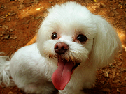
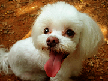

강아지 집
강아지가 편히 쉴 수 있는 포근한 집이 필요합니다. 강아지의 집은 강아지가 다 큰 후에도 계속 쓸 수 있는 집으로 구입하세요.집을 구입하실 때는 박음질이 잘 되어 있는지, 세탁이 간편한 제품인지 꼭 확인하시고 고르시는 것이 좋습니다.
강아지가 편히 쉴 수 있는 포근한 집이 필요합니다. 강아지의 집은 강아지가 다 큰 후에도 계속 쓸 수 있는 집으로 구입하세요.집을 구입하실 때는 박음질이 잘 되어 있는지, 세탁이 간편한 제품인지 꼭 확인하시고 고르시는 것이 좋습니다.
강아지의 먹이는 꼭 어린 강아지용으로 나와있는 사료를 선택하세요. 강아지들은 사람에 비해 성장속도가 8배정도 빠르답니다. 따라서 강아지에게는 성장속도에 맞는 사료를 급여하셔야 합니다. 사람이 먹는 음식을 먹게 되면 양념과 향신료에 입맛이 익숙해지고, 비만이 될 가능성이 매우 높아집니다. 강아지용 사료는 생후 12개월까지 급여하셔야 합니다.
밥그릇은 쉽게 넘어지지 않도록 바닥이 넓은 것이 좋습니다.물병은 대롱이 달린 것으로 선택하세요. 밥그릇에 물을 주게 되면 입 주변에 털이 모두 젖기 때문에 비위생적이므로 대롱을 통해서 물을 먹을 수 있는 물병을 마련하시는 것이 좋습니다.
강아지를 잃어버릴 염려가 있으니 산책할 무렵이 되면 이름표를 꼭 목에 걸어주도록 하세요. 그리고 방울이 달린 목걸이를 하고자 하실 때는 신중하셔야 합니다. 움직일 때마다 방울이 딸랑 거리면 신경이 예민한 강아지들에게는 좋지 않은 영향을 끼칠 수 있기 때문입니다.

 
